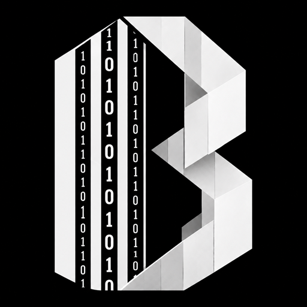

개인
19,000원/월
- 사용자 1명
- 프로그램 1개
- 기본 기록과 조회

BuiltCode built to code, built by code프로그램 사업
BuiltCode는 반복되는 업무를 프로그램으로 정리하고, 쓰는 동안 계속 고치는 정기 구독 제품으로 제공합니다.
인사
견적, 근태, 재고처럼 매일 반복되는 일을 화면 하나로 모읍니다. 프로그램을 한 번 넘기고 사라지지 않고, 구독하는 동안 기능과 화면을 이어서 고칩니다.
서비스
모든 요금은 월 단위이며, 부가세는 별도입니다.
19,000원/월
많이 선택
59,000원/월
129,000원/월
제품
BC-01
출퇴근, 휴가, 근무 시간을 한 장부에 기록합니다. 월말 근무표를 다시 엑셀로 옮기지 않습니다.
BC-02
견적서를 만들고, 보낸 뒤 수락과 보류를 상태만으로 따라갑니다.
BC-03
들어오고 나간 수량을 기록하고, 남은 재고가 기준 아래로 내려가면 목록에 표시합니다.
연구
아직 제품으로 열지 않은 구상입니다. 이 페이지에서 방향만 보여 드립니다.
약속한 입금일이 지나면 거래처별로 남은 금액을 모아서 보여 줍니다.
현장에서 찍은 사진이 그날 작업 기록에 바로 남습니다.
매월 같은 항목의 청구서를 새로 만들지 않고, 지난달을 기준으로 다시 발행합니다.
대표, 경리, 현장 담당이 각자 필요한 메뉴만 보게 나눕니다.
특허
출퇴근, 견적, 재고를 화면에서 따라가는 처리 방식을 이 칸에 모아 두었습니다.
근태
출퇴근, 휴가, 근무 시간을 같은 장부에 남겨 월말 근무표로 바로 넘기는 방식입니다.
견적
작성, 발송, 수락, 보류를 문서를 다시 만들지 않고 상태만 바꿔 따라가는 방식입니다.
재고
들어오고 나간 수량을 반영한 뒤, 남은 재고가 기준 아래면 목록에 올리는 방식입니다.
포트폴리오
근태
출퇴근과 휴가를 한 장부에 모아, 월말에 근무표를 다시 만들지 않게 했습니다.
견적
보낸 견적의 수락과 보류를 상태만으로 따라가도록 화면을 붙였습니다.
재고
들어오고 나간 수량을 기록하고, 남은 재고가 기준 아래면 목록에 올리게 했습니다.